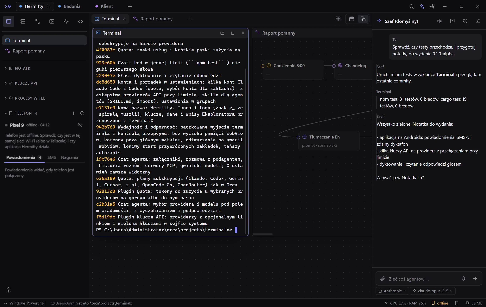
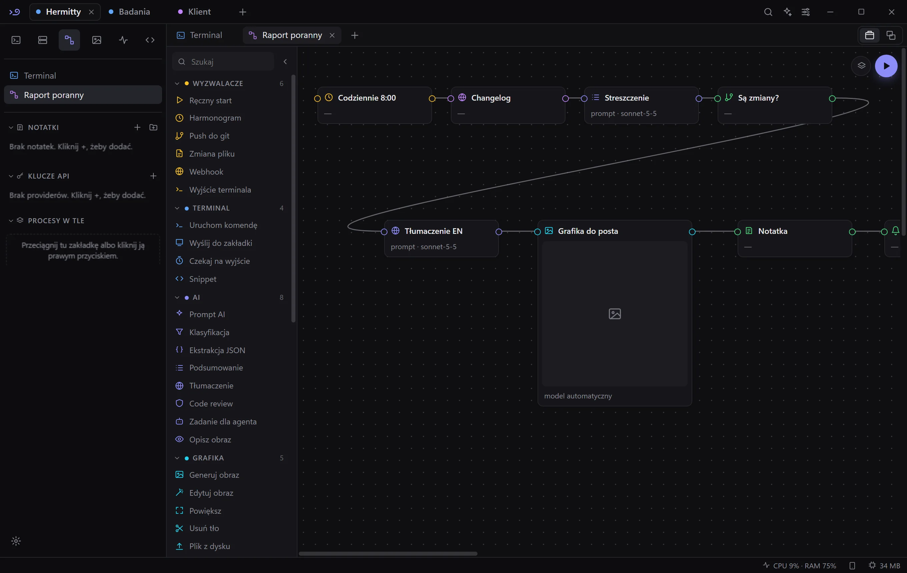
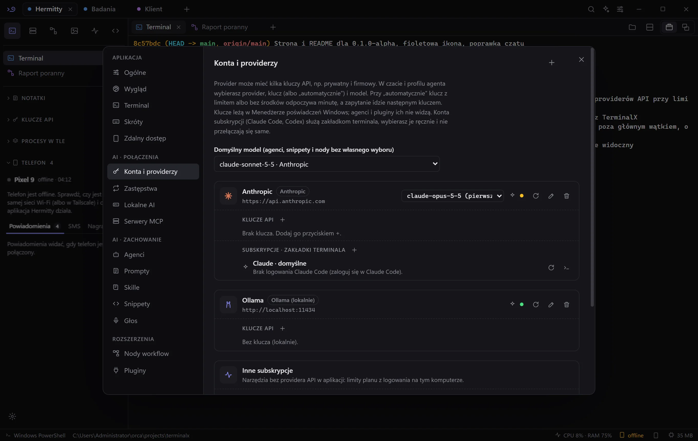
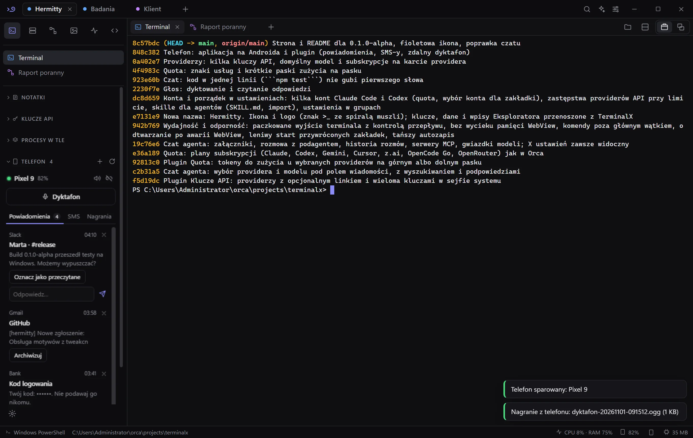

Wszystkie powłoki
w jednym oknie.
PowerShell, CMD, WSL i SSH w zakładkach na Windows. Obok agent AI, który czyta wyjście terminali i uruchamia komendy dopiero po Twojej zgodzie.
npm test
auth.test.ts wygasa przed asercją. Skrócić czekanie w teście?Tak wygląda Hermitty.
Prawdziwe zrzuty z wersji alpha.






Ty decydujesz, ile agent może.
Każdy profil agenta ma jeden z trzech trybów. Podagent zlecony przez agenta nie dostaje więcej uprawnień niż ten, kto mu zlecił.
Te komendy zawsze czekają na zgodę, także w wariantach jak rm -fr czy del -r:
Co jest w środku.
Funkcje
Telefon z Androidem obok klawiatury.
Mała aplikacja (ok. 90 KB) łączy telefon z Hermitty w tej samej sieci Wi-Fi albo przez Tailscale.
- Powiadomienia na komputerze. Odpowiadasz i zamykasz je bez sięgania po telefon.
- SMS-y: rozmowy, czytanie i wysyłanie.
- Zdalny dyktafon pod Ctrl+Alt+R, także przy zablokowanym ekranie. Nagranie zamienisz na tekst.
- Znajdź telefon dzwonkiem na pełnej głośności.
Połączenie jest szyfrowane kluczem z jednorazowego parowania. Kody logowania i BLIK telefon zamienia na kropki, zanim cokolwiek wyśle.

Pobierz wersję alpha.
Wszystkie pliki są w wydaniu v0.1.0-alpha na GitHubie. Zainstalowana aplikacja aktualizuje się sama.
To wczesna wersja i może mieć błędy. Instalator nie ma jeszcze certyfikatu: przy pierwszym uruchomieniu wybierz „Więcej informacji”, potem „Uruchom mimo to”.